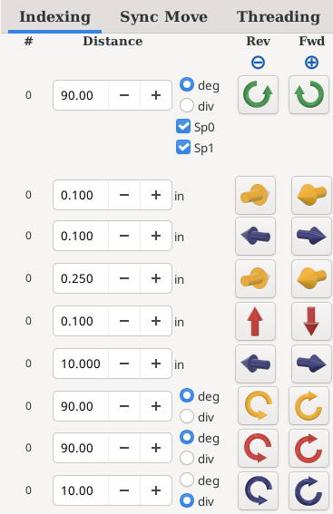

Axes Colors
| Color | Axis | Movement Control | |||||
| Neg | Pos | Neg | Pos | ||||
| Yellow | X | U | A | 
| 
| 
| |
| Red | V | B | 
| 
| 
| 
| |
| Blue | Z | W | C | 
| 
| 
| |
| Black | Spindles (Sp0 & Sp1) | 
| 
| ||||
On this page, the axis letters are colored to assist the user. (Note: LinuxCNC does not allow for a Y axis when running as a lathe.)
Every axis has a row of controls on the user screens, but only the axes selected for use can be operated - the others are grayed out. For example, in the screen shown below, the user has selected to use the X, Z, U, V, W, and C axes, so the A and B rows are grayed out.
The table at the bottom of the user screen titled, Axis Assignments, shows the current axis assignments. It is updated the next time Rosetta is started after the selected axes are changed.
|
|
Indexing Tab

The Indexing tab is used to drive motors on the selected axis, one at a time.
The buttons to the right initiate the indexing operation in either the reverse (- movement) or forward (+ movement) direction.
Images on the buttons show the movement direction.
To index an axis, follow these steps:
| Step | Action | Value Saved? |
| 1 | The axis must be ENAbled.
The ENAble status for an axis is not saved when exiting Rosetta. It will always default to not enabled. If it is not enabled when you index, Rosetta asks whether to enable it (see ENA). | No |
| 2 | The feed rate for the axis must be a non-zero number. | Yes |
| 3 | The distance to move the axis must be a non-zero number. | Yes |
| 4 | To initiate the movement, click on the button showing the direction for the desired movement. | No |
Counter
There is a counter for the number of indexing operations which have been performed. This count is shown as the number to the left of the indexing Distance.
- It is incremented by 1 for each Fwd indexing operation.
- It is decremented by 1 for each Rev indexing operation.
- The count starts at 0 when Rosetta is started. (It is not saved when you exit and then re-start Rosetta.)
- If the indexing Distance is changed, it reverts to 0. (The assumption is that you are starting a different activity.)
- You can set it back to 0 yourself by double-clicking on the number (double-clicking is implemented so you do not accidentally reset it).
Spindles
For the spindles, this can be in either degrees or divisions of a circle.
Additionally, you can choose to index:
- the main spindle (Sp0),
- the rosette phaser multiplier (Sp1), or
- both
If neither is selected, nothing happens.
A spindle index always turns in the direction of the button you click, for the full distance, even when going the other way round would be shorter. For example, a Fwd index of 270 degrees turns the spindle 270 degrees forward; it does not turn it 90 degrees in reverse. An index of 180 degrees (2 divisions) also turns the same way every time.
The reason is backlash - the small amount of free play in the gears or belt between the motor and the spindle. Each time the spindle changes direction, the motor has to take up that play before the spindle starts to move, so an index which reversed would stop short by the amount of backlash. Turning the same way for every index keeps the index positions evenly spaced.
- Do not mix Fwd and Rev indexes while you are working around a pattern. Click the same direction button for every index of the pattern, so the backlash is always taken up the same way.
- Do not back up one index with a single click of the other direction button. The spindle would stop short by the amount of backlash. If you go one index too far, click the other direction button twice, then click the original direction button once - the spindle then arrives at the position from the usual direction.
Note: Each index is measured from where the previous index was meant to stop, not from where the spindle actually stopped, so the tiny differences in where it stops do not add up as you work around the circle. For example, 24 divisions done all the way round end back where they started. After the spindle has been run (not indexed), the next index starts from wherever the spindle is.
Linear Axes
For linear axes, this is a distance. The UOM shown for these axes, and used by the system, is based on the Measurement System selection.
Angular (Rotary) Axes
For the angular axes (A, B, and C), this is a rotary indexing, in degrees or divisions of a circle.